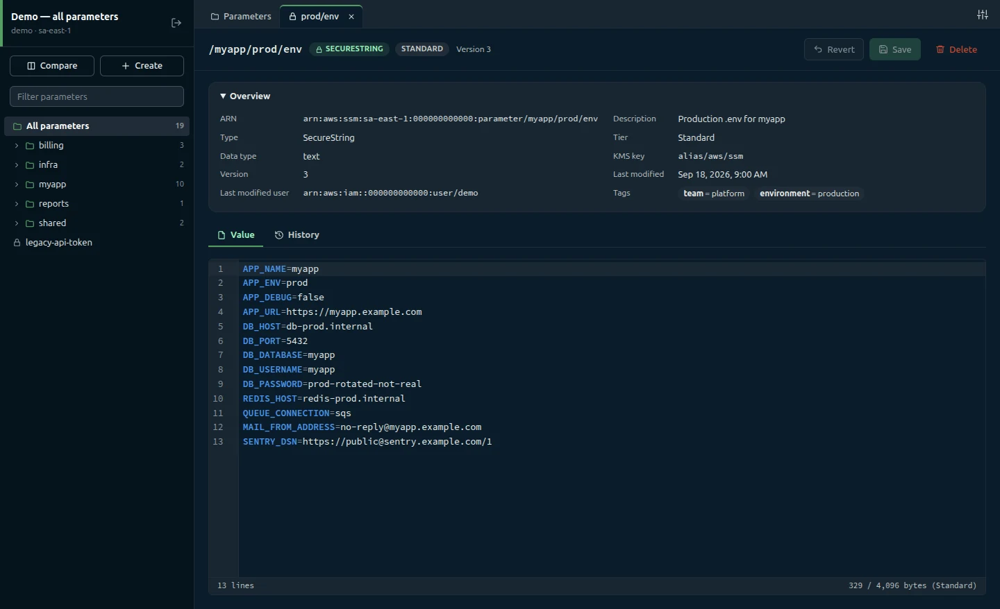

Parameter Manager: the desktop GUI for AWS Parameter Store.
Browse every parameter, edit values as .env text, and review a key-by-key diff before anything is written. A fast, careful client for the configuration your apps depend on.
v0.2.0 · Linux, Windows and macOS · Works with your existing AWS profiles, SSO included

+1 added~1 changed
Saved version 4
A diff before every save
Saving is the riskiest thing you do in Parameter Store, so Parameter Manager never writes blind. Every save lists added, changed and removed keys with values masked, checks that nobody saved in between, and keeps the parameter's type, KMS key and description exactly as AWS stores them.
The list has the same columns as the AWS console: name, tier, type, data type, version, last modified, last modified user and description. Search by name or description, sort any column, and move through your paths with a folder tree built from the names.
Search and sort always cover every row
Thousands of parameters stay fast
Edit values as .env text
Values open in a CodeMirror editor with syntax highlighting, warnings for invalid lines and duplicate keys, and a byte counter against the tier limit. JSON and plain strings open as plain text. Press Ctrl+S to review and save.
SecureStrings stay hidden until you decrypt them
Search inside the value with Ctrl+F
Version history with one-click restore
Browse every version, newest first, and see exactly which keys changed compared with the current value. Restore this version puts the old value back in the editor as unsaved changes; saving it creates a new version, so history is never rewritten.
Compare across environments and accounts
Pick a connection and a parameter for each side, such as staging against production or one AWS account against another. See how many keys differ, exist on one side only, or are equal, then read the key-by-key table. Values stay masked until you reveal them.
Connections that know what's production
A connection is an AWS profile plus a region, an optional path prefix and a color. Mark a connection read-only and every write action disappears. The main process refuses writes on it too, so a UI bug can't change production.
Profiles come from your AWS config and credentials files
Test connection before you save it
Safety
Careful by design
Every save goes through the same checks, in the same order, before anything reaches AWS.
01
Guards first
Empty values, SecureStrings that were never decrypted, unchanged values and anything over 8,192 bytes are stopped before a dialog opens or AWS is called.
02
Review the diff
Added, changed and removed keys, values masked. Going over 4 KB on a Standard parameter means ticking the Advanced tier upgrade yourself.
03
Check the version
The parameter is read again before writing. If someone saved in between, you choose: reload the latest, or overwrite anyway.
04
Keep the metadata
Type, KMS key, description, allowed pattern and data type come from what AWS holds, never from a stale list. Only the value changes.
Credentials stay in your AWS files
The app stores only connection names, profiles, regions and display settings, written atomically with file mode 0600.
A hardened Electron app
Only the main process talks to AWS. The UI is sandboxed with context isolation, no Node integration and a strict Content Security Policy.
Values are never logged
Logs hold only the error code, parameter name and message. Deleting a parameter requires typing its full name.
Get started in minutes
Parameter Manager uses the AWS profiles already on your machine. No extra keys, no account to create.
1. Install it
Download the installer for Windows, the .dmg for macOS, or the AppImage or .deb package for Linux. You need AWS profiles in ~/.aws/config or ~/.aws/credentials; static keys and SSO both work.
Run from source in demo mode, with 19 fake parameters and nothing sent to AWS. Requires Node.js 20.19 or newer.
npm install && npm run demo
Frequently asked questions
A desktop client for AWS Systems Manager Parameter Store. It lists parameters with the same columns as the AWS console, edits values as .env text, shows a diff before every save, browses version history and compares two parameters, even across AWS accounts. It is written in plain JavaScript on Electron, CodeMirror 6 and the AWS SDK for JavaScript v3.
Nothing. Parameter Manager is free and open source, and it will stay that way, forever. There is no account, no subscription and no paid tier. The source code is on GitHub, so you can read it, build it yourself and contribute.
AWS still bills its own usage as usual, such as Advanced-tier parameters and higher API throughput.
Reading needs ssm:DescribeParameters, ssm:GetParameter, ssm:GetParameterHistory and ssm:ListTagsForResource. Without the last one the app still works and shows tags as “Unavailable”. Writing also needs ssm:PutParameter and ssm:DeleteParameter.
SecureStrings with a customer-managed key need kms:Decrypt to read, and kms:Encrypt to write, plus kms:GenerateDataKey for Advanced-tier SecureStrings.
Leave out the write statement for read-only users, and scope Resource to your parameter paths where you can.
No. Credentials stay in your AWS config and credentials files. Parameter Manager stores only connection names, profile names, regions and display settings, in its own settings folder (~/.config/Parameter Manager on Linux, %APPDATA%\Parameter Manager on Windows, ~/Library/Application Support/Parameter Manager on macOS).
Yes. SSO profiles are marked “(SSO)” in the profile list. When a session expires, the error shows the exact aws sso login --profile … command to run. Role profiles that need an MFA code (mfa_serial) aren't supported yet; use a profile that is already signed in.
Standard parameters hold up to 4,096 bytes. When a value is bigger, the save dialog asks you to tick Upgrade to the Advanced tier (charges apply). Advanced parameters hold up to 8,192 bytes and can't be downgraded, so the app never changes the tier without asking.
Linux x64, as an AppImage and a .deb package; Windows x64, as an installer; and macOS, as a .dmg for Apple Silicon and for Intel Macs. Builds aren't code-signed yet, so Windows SmartScreen and macOS Gatekeeper may warn you the first time you open the app, and there is no auto-update. Every build is listed on the GitHub releases page.
Parameter policies (expiration and notifications), labels and tags can't be edited yet. Profiles that can read parameters but lack ssm:DescribeParameters can't use the app, because both listing and saving need it.
Ready to get started?
Download Parameter Manager and connect it to the AWS profiles you already use.